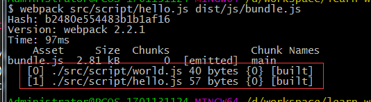

npm init
生成package.json文件
npm install webpack -g
全局安装webpack
npm install webpack --save-dev
安装webpack依赖项
创建以下目录及文件
src为打包源文件目录，dist为打包输出文件目录
index.html
<!DOCTYPE html> <html lang="en"> <head> <meta charset="UTF-8"> <title>webpack hello world</title> </head> <body> <script src='dist/js/bundle.js'></script> </body> </html>
hello.js
require('./world')
function hello(){
alert('hello')
}
world.js
function world() {
return {
}
}
执行webpack src/script/hello.js dist/js/bundle.js

hello.js以及hello.js依赖的world.js都被打包进了dist/js/bundle.js中了，打开bundle.js，我可以找到源文件的代码
然后用浏览器打开index.html，也会弹出hello窗口
只要把webpack安装到全局即可使用webpack打包方法